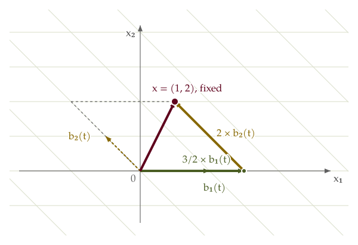

Keep the vector fixed. Change its coordinates.
Predict: The wine arrow ends at (1, 2). If the basis grid changes, must this arrow move?
Fixed vector x = (1, 2)First basis contributionSecond basis contribution
Coordinates in the displayed basis:
Start: x = e₁ + 2e₂. Watch the arrow stay fixed as its grid changes.

Read the guided explanation
- Start with the standard basis (1, 0), (0, 1). The coordinates of x are (1, 2).
- At progress t, use b₁(t) = (1 + t, 0) and b₂(t) = (−t, 1). Their determinant is 1 + t, which stays positive for 0 ≤ t ≤ 1, so they always form a basis.
- The coordinates are ((1 + 2t)/(1 + t), 2). The first scaled arrow ends at (1 + 2t, 0); adding the second, (−2t, 2), always reaches the same point (1, 2).
- At t = 1, b₁ = (2, 0), b₂ = (−1, 1), and x = (3/2)b₁ + 2b₂. The coordinates are now (3/2, 2).
What changed—the vector, its coordinates, or both?